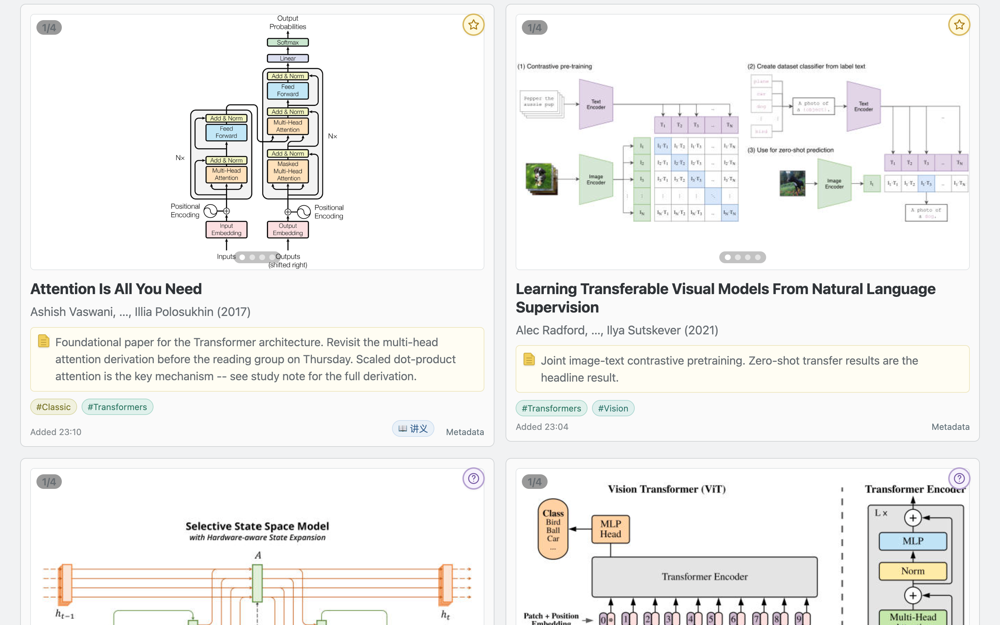
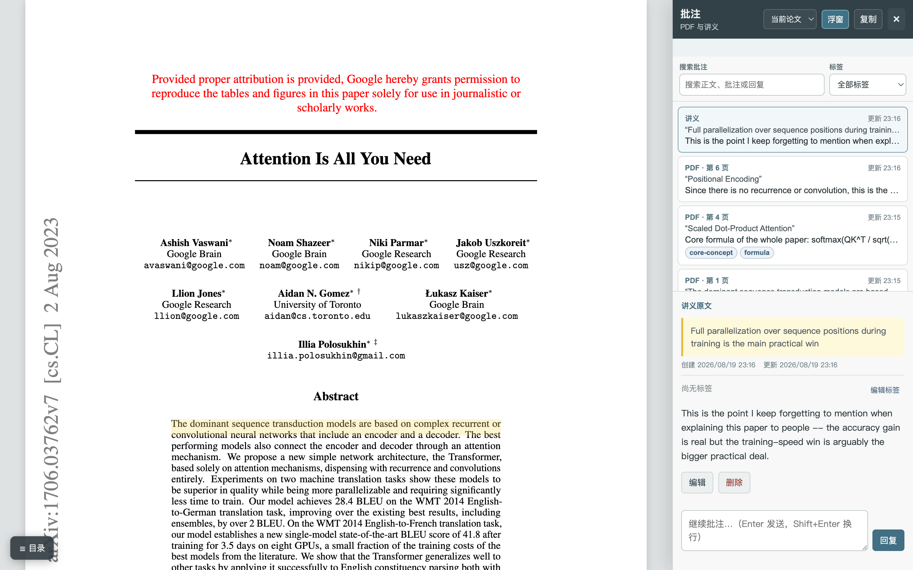
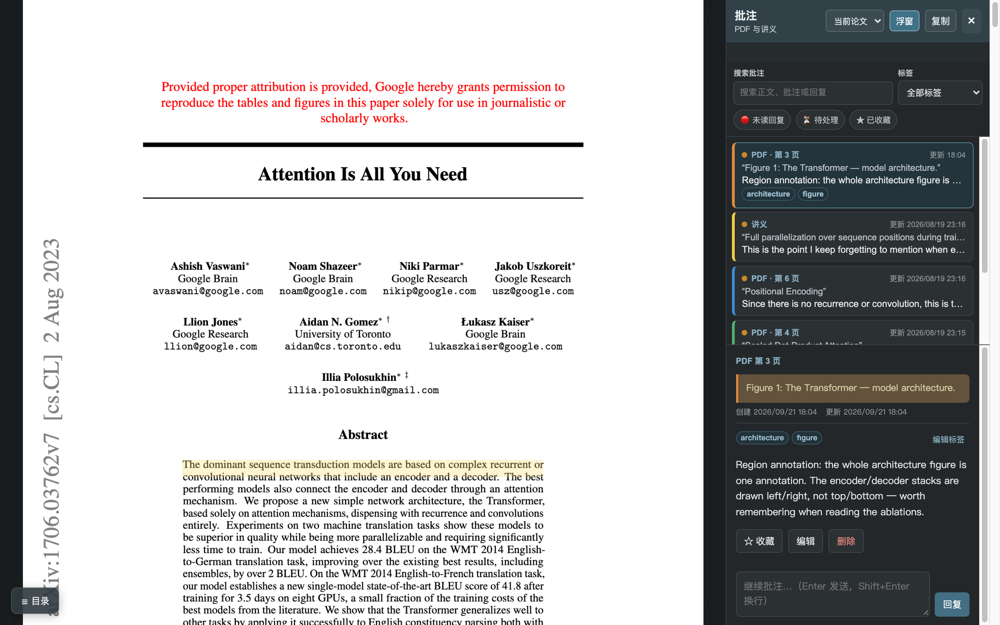
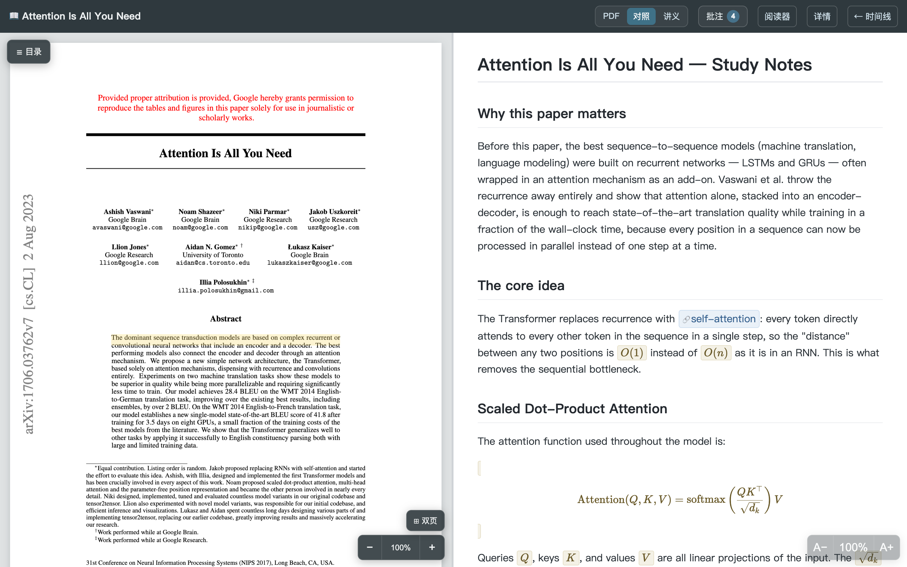
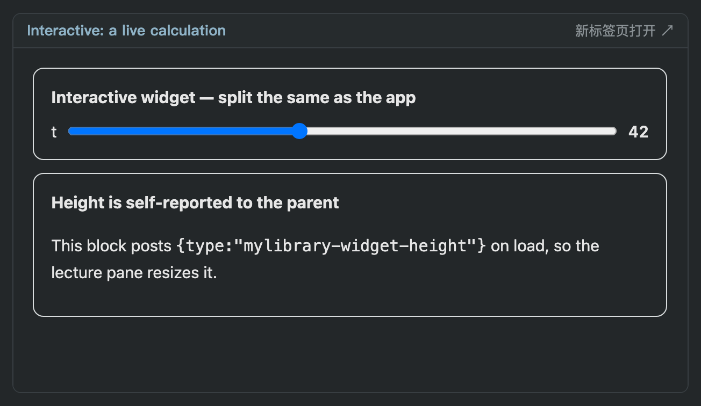
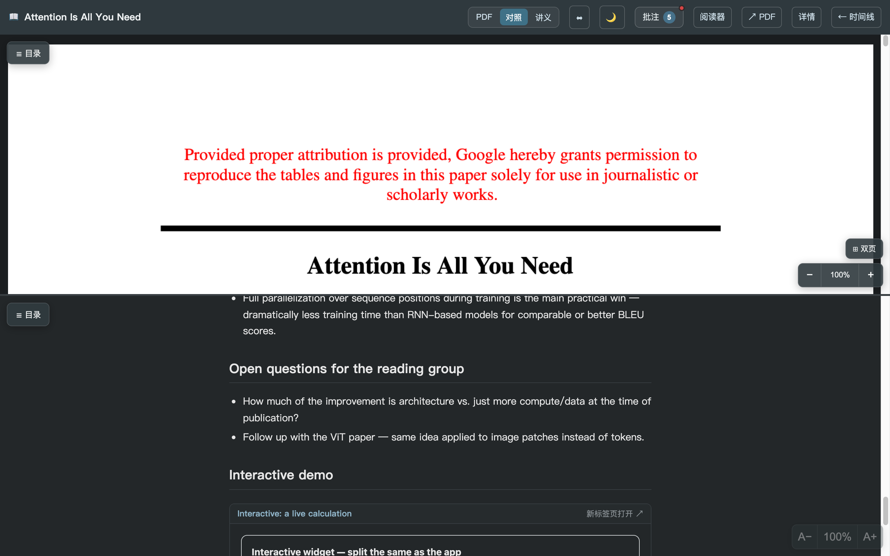
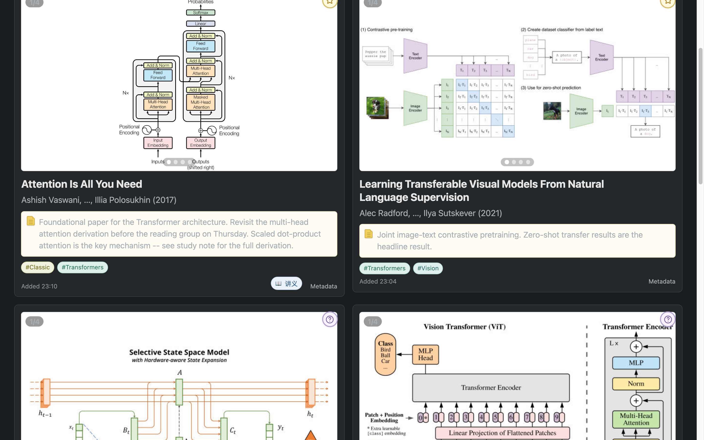

A paper library you actually
come back to.
Reference managers are excellent at filing papers and terrible at returning to them. MyLibrary-Plus is a self-hosted layer above Zotero that optimises for the revisit: a figure-first timeline, annotations shared between the PDF and your own notes, and a JSON API that hands a whole thread to an AI agent.
data/ dir
MIT
Python 3.10+
example library included

What it does
Everything below runs on your machine: one SQLite file, content-addressed PDFs, and
a web UI bound to 127.0.0.1.
Figure-first timeline
Papers as a reverse-chronological feed of cards with their figures, a full-screen lightbox, tags, verdicts and reading markers. Filter by tag, by “has study notes”, or search.
Annotations in one place
Select text in the PDF or in your Markdown notes — or drag a box over a whole figure. One sidebar holds both, with tags, timestamps, replies, favorites and unread tracking.
Study view (讲义)
PDF beside your notes: KaTeX math, embedded figures, callout boxes, [[wikilinks]] to shared concept notes with backlinks. Several notes per paper behind a picker.
Live components in notes
A ```widget fence embeds your own HTML/JS — a slider, a demo, a diagram — served from that paper's asset folder and following the app's theme.
Night reading (夜览模式)
System / light / dark on every page, applied before first paint so there is no flash, with dark palettes for the timeline, reader, notes, panels and widgets.
Offline Zotero import
zotero_import.py -c "Collection" reads Zotero's SQLite directly and reuses the PDFs already on disk — paywalled papers keep their figures, nothing is downloaded.
Agent-ready annotations
GET /api/papers/{id}/annotations/context returns the paper, the annotations and instructions as JSON; an agent replies into the thread as role: "assistant".
Ready-made example library
examples/data/ ships a small public-paper library plus verify.py, so a fresh clone can see every screen and check every route before importing anything.
Screens
Captured from the bundled example library, never from a real one.




```widget block.

Run it in 2 minutes
git clone https://github.com/george-wyy/MyLibrary-Plus.git && cd MyLibrary-Pluspython3 -m venv .venv && .venv/bin/pip install -e .cp -R examples/data ./data— or start empty and add your own./mylibrary servethen openhttp://127.0.0.1:8765
# see every screen without importing anything
cp -R examples/data ./data
./mylibrary serve
# or let the bundled checker prove the install works
python3 examples/verify.py --serve
# bring your own papers
./mylibrary add "Attention Is All You Need"
python zotero_import.py -c "Reading list"127.0.0.1. To read from a phone, put it behind a
private overlay network or an authenticating proxy — the repo documents both.
Where this sits
Zotero stays the storage and BibTeX backend; MyLibrary-Plus is the layer where you re-encounter papers, look at their figures, annotate them, and hand the thread to an agent. A study note can be plain Markdown you write yourself — there is no lock-in and no service account.
Built to be driven by an agent
Annotations are not a dead end — they are structured context on a stable, local API.
# the reader's annotations for one paper, plus instructions
curl localhost:8765/api/papers/$PAPER_ID/annotations/context
# answer back into the thread (shows up in the sidebar as 助手)
curl -X POST localhost:8765/api/papers/$PAPER_ID/annotations/$ID/replies \
-H 'content-type: application/json' \
-d '{"content": "The trick is the residual path…", "role": "assistant"}'Docs an agent can read
docs/ai-integration.md lists every route with payload shapes; docs/architecture.md explains the data model and file layout.
A checker to trust
examples/verify.py boots the app and asserts the advertised routes work — the same gate used before each release.
Everything is a file
Notes are data/lectures/*.md, concept notes data/notes/*.md, papers in one SQLite file. An agent can create all three without opening a browser.